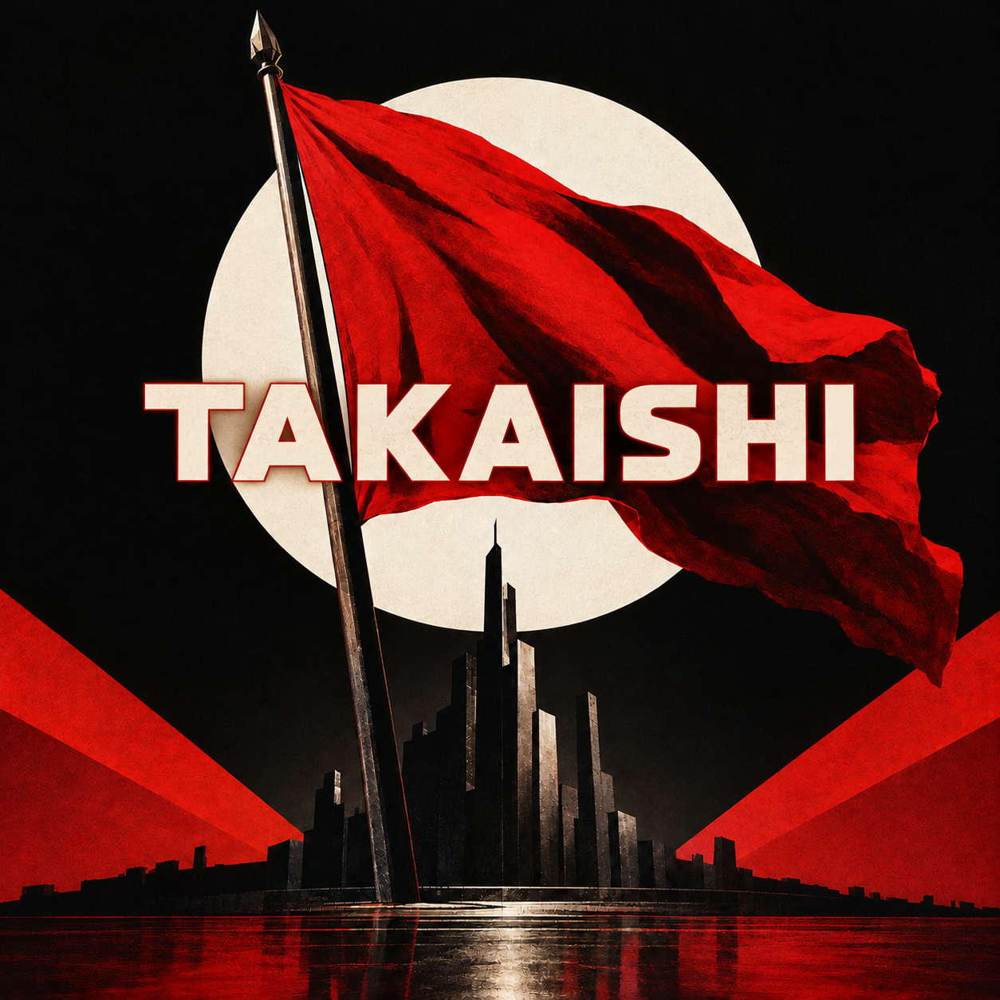

Oh-No Corp RECORDS
TAKAISHI
大野物産株式会社
LYRICS
北海道、網走。
鉄格子を越え、雪原を駆け、
今宵、一人の男が現れた。
その名は――高石。
同志よ、旗を掲げろ。
革命は、まだ来ない。
中学、高校、六年の檻
男子校で磨いた孤高の意志
難関試験を突破して
学生デスクに座る若き闘士
赤い思想を胸に抱き
やがて現場へ身を投げた
運送労働で鍛えた腕に
来たる革命の夢を乗せた
昼は運び 夜は語る
誰も知らない未来を語る
筋肉の奥に燃える炎
資本主義よ 震えて眠れ
立てよ、高石！ 旗を掲げろ！
まだ見ぬ世界を切り開け！
作るインフラ 壊す国家
矛盾こそが革命の花！
赤旗を振れ！ 同志よ叫べ！
歴史の歯車を回すのだ！
オー、レボリューション！
来るのか来ないのか！
バリ、ジャカルタ、2016
スーパーに響く勝利の凱歌
ゲイ・チャン氏を捕獲して
オープンカーへの道を開く
2019 エジプトの空
岩村と旅した異国の地
「絵葉書を日本へ送ろう」
その言葉から始まる悲劇
蚊を叩き潰し テープで封印
絵葉書に添えた異文化交流
学びはしない 征服するのだ
異国の蚊まで祖国へ送れ！
立てよ、高石！ 旗を掲げろ！
まだ見ぬ世界を切り開け！
作るインフラ 壊す国家
矛盾こそが革命の花！
赤旗を振れ！ 同志よ叫べ！
歴史の歯車を回すのだ！
オー、レボリューション！
蚊の運命も国家の運命も！
運行管理を経て 建設現場へ
道路を作って 国を壊す
2024 札幌の夜
ストーリーに踊る虚構の企業名
グループ会社が本体になる
一つの投稿で真実が揺れる
大衆を動かすその指先
フェイクニュースさえ革命の道具！
若葉！ エコー！
マルクス！ 赤旗！
その先に待つ未来は何だ？
ワンカッパーか
ブルーシーターか
同志よ、答えはまだ出ない！
立てよ、高石！ 旗を掲げろ！
網走の空から世界を変えろ！
作るインフラ 壊す国家
矛盾を抱いて突き進め！
岩村よ来い！ 論戦の舞台へ！
虚空の同志と火花を散らせ！
レフト・アンド・ライト！
決着の日まで！
革命は近い。
高石。
次は、どこの国家を壊すのか。
PERSONAL MUSIC PLAYER